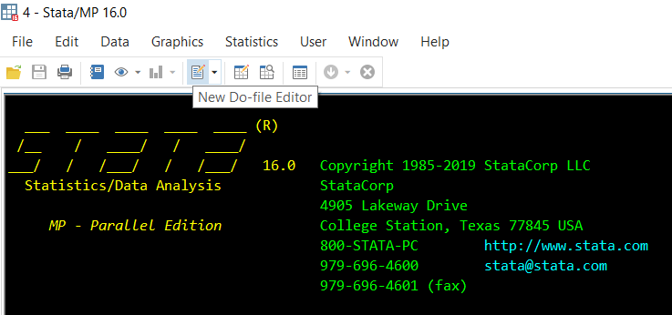
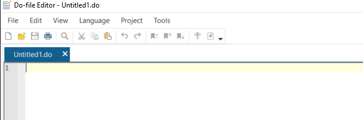
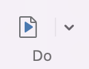
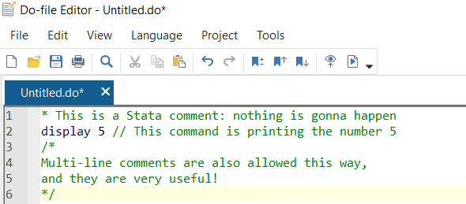

import stata_setup
stata_setup.config('C:\Applications\Stata18/','se')02 - Working with Do-Files
econ 490
pystata
do-files
commenting
delimiters
log-files
This notebook covers how to write and work with Stata do-files. We go over how to create a do-file, commenting, and generating log-files.
Prerequisites
- Connect Stata on your personal computer to JupyterLab.
Learning Outcomes
- Understand the importance of executing commands inside of a do-file.
- Open and execute commands within a do-file.
- Annotate do-files for the purpose of clearly communicating an empirical approach.
- Generate log-files that document the results of the do-file execution.
2.0 Intro
>>> import sys
>>> sys.path.append('/Applications/Stata/utilities') # make sure this is the same as what you set up in Module 01, Section 1.3: Setting Up the STATA Path
>>> from pystata import config
>>> config.init('se')2.1 Introduction to Do-Files
Do-files save of the list of commands we want to run for our analysis and allow us to run these commands in one go, directly from a file. When we run our analysis in a do-file, we always know exactly what we have asked Stata to compute, which leads to far fewer errors. We can also easily edit the file whenever we want to make any changes to our analysis. Further, we will often want to repeat the same analysis over and over again (say, for subgroups of our sample). Using a do-file makes this straightforward. Finally, and importantly for large research projects, we can show our do-file to either a TA or an instructor for help and feedback. Many research courses require students to submit their do-files with their final paper.
Stata provides a way to save these notebooks of code, also known as do-files, where we can keep all the code we ran in a particular session.
Note: The Jupyter cells in the following lectures will work as a do-file proxy, but whenever we run commands in the Stata interface it is very important to keep track of those commands in a do-file.
2.2 Opening Do-Files from Stata Interface
To open the Do-file Editor from our Stata session, we use the shortcut Ctrl(Command)+9 or click this part of the Stata Interface:

We can now see a new window in our computer that looks like this:

Warning: We always want to save our do-files in a folder as soon as we begin working by clicking the save icon on the top right. It is good practice to also save our do-file each and every time we run it. Getting in the habit of doing this will save you many hours of redoing accidentally lost work when your file closes!
2.3 Executing Do-Files
Once we have written our commands, we can run our code in one of three ways:
- By running
do insert_dofile_name.doeither in the command line or in another do-file. - By clicking on the play button icon at the top right of the display.
- By selecting a sub-section of the text and clicking on the play button icon at the top right of the display.
The icon for executing code looks like this:

In Module 18 we will cover in detail how to set up do-files for a research project.
2.4 Writing Comments in Our Code
Writing comments for different parts of our code is a very good practice. It allows us to revisit code we wrote in the past and understand what we were doing. Stata allows for three different types of comments in our do-files.
The first type of comment requires using asterisks * and works well for a single line of text:
%%stata
*This is a Stata comment: nothing is going to happen hereThe second type of comment requires using slashes // and can be used whenever we want to write a comment next to our code.
%%stata
display 5 // This command is printing the number 5The third type of comment requires using a backlash and asterisk: /*. This is used for a multi-line comment that starts with /* and closes with */.
%%stata
/*
Multi-line comments are also allowed this way,
and they are very useful!
*/We can see in the image below that the comments are highlighted with the colour green within our do-files. Whenever we see that colour, we can automatically recognize that as being a comment made by the author. Similarly, we can see that the recognized Stata commands in our do-file are highlighted in blue. These colours help us differentiate comments from code.

2.5 Saving Log-Files
Log-files save the results of all of the code that you run. In other words, they save everything that appears in the results window when we run a do-file. Instructors and TAs will likely want to see your log-file whenever you have problems with your analysis and, as with do-files, most instructors will require students to submit their log-files with their final research at the end of the term.
It is important to get into the practice of creating a log-file every time we run a do-file.
We need to start every do-file with the command that creates a log-file: log. This tells Stata to open a log-file and create a record of what you type and the output that appears in the results window. The syntax of this command is log using filename, where filename is the name you want the log to have when saved.
Note: Carefully choose a file name that clearly indicates the analysis you are undertaking, with no spaces or capital letters.
Given that work is often likely to be submitted online, it is a good idea to also get into the practice of saving our log-file as a text file that an instructor or supervisor can view on Canvas. To create a log-file as a text file, we use the option text. We will probably be overwriting the same log-file many times (i.e. each time you run the do-file) so we will also want to use the option replace.
All together our command line will be:
log using filename, text replaceIt is imperative that we close our log-file at the end of the do-file. Otherwise, the log-file will continue to record all of our work and cause our do-file to crash the next time we run it. The command to close the log-file belongs at the very end of the do-file.
The command to close the log-file is simply log close. The most common approach is to run the following command at both the beginning (to close any previously opened log-files) and end of your do-file.
capture log closeAlthough we will discuss the capture command in Module 6, what we need to know at this point is that if we run this command and there is no log-file open, Stata just ignores this line and keep going. This way, we can avoid one of the most frustrating features of using do-files. If your do-file crashes partway through a run, the log-file will not be closed, and having the log-file still open will then cause the do-file to crash a second time when the do-file is next run.
2.6 Wrap Up
When producing a research project, organization and attention to detail are extremely important skills to develop. That is why we should always save the do-file in an easy-to-reach folder as soon as we begin our work by clicking the save icon on the top right. It is good practice to also save our do-file each and every time we run it. Getting in the habit of doing this will save many hours of redoing accidentally lost work when a file closes!
We will be learning more about how to organize all of our files in Module 18.
Note: Showing a do-file to a TA, instructor, or supervisor is a great way to get help or feedback. It is also good to submit a do-file for any practical assignments using Stata.
References
What’s it like – Getting started in Stata
Official Stata commands cheat sheet
New enhancements to Stata do-files. How to add bookmarks to your do-files